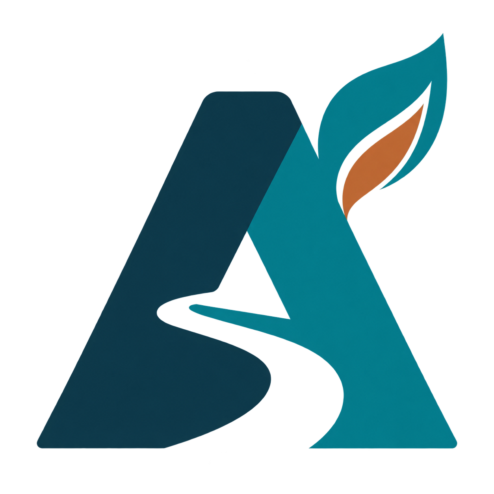

Proposta de identidade · Acre
Indústria que conecta.
Identidade que representa.
Um símbolo para produção, território e desenvolvimento, com uma paleta de azul petróleo, turquesa e cobre.

PORTFÓLIO INDUSTRIALdo Acre
Azul petróleo
#123B4ATurquesa
#087F8CCobre
#C66B3DMarfim
#FAF8F5Turquesa claro
#75CED2Exemplo de aplicação
Conectando a indústria acreana
ao futuro.
Conheça empresas, produtos e serviços que movimentam a economia do nosso estado.
Identidade própria de uma plataforma independente dedicada à indústria acreana. O símbolo foi gerado com ImageGen; uma versão vetorial será útil para impressão.